Research Planning
문제 정의 → 방법론 → 검증 계획으로 연구 흐름 구조화
ROBOTICS · CAE · FEM-AI · RESEARCH
문제를 정의하고, 해석·데이터·모델링을 연결해 검증 가능한 연구 결과로 만듭니다. DCF FEM-AI 연구에서는 연구 워크플로우 수립부터 논문화까지, 방탄 구조 해석에서는 선행연구 재현부터 수치 안정화까지 수행했습니다.
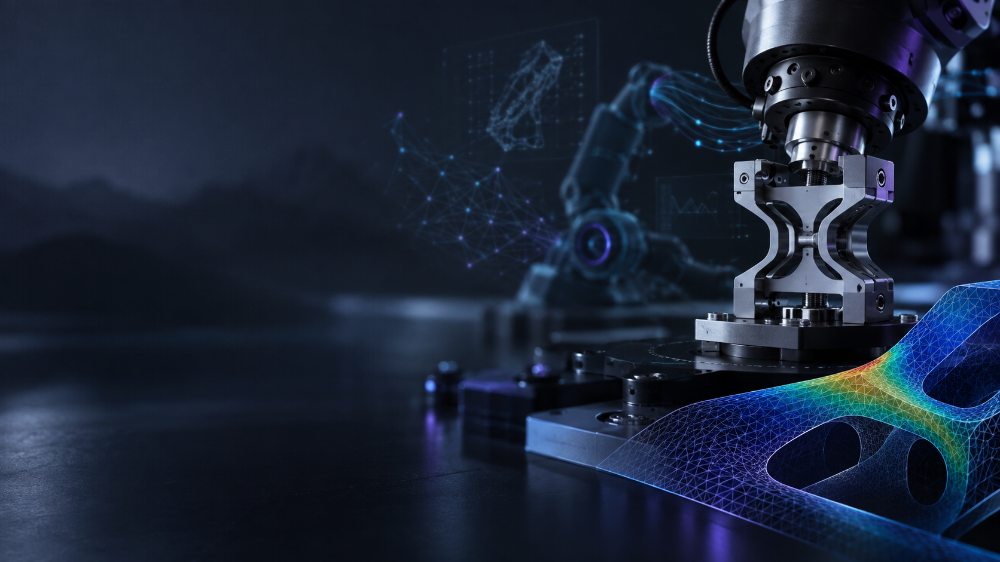
ABOUT / RESEARCH READINESS
Yeungnam University · Robot System Lab · CAE · FEM-AI · Robotics
NTIS 국가연구자 등록, 학부연구생 경험, 연구과제 문서 작성·정리 경험과 다수의 프로젝트 리드 경험을 바탕으로 실제 연구환경에서 요구되는 기술 수행 + 문서화 + 협업을 함께 준비해 왔습니다.
RISE, SAFE ONE-Q 등 연구 과제 문서를 접하며 연구 목적·수행 내용·성과를 구조화하는 방식에 익숙해졌고, Humanoid 팀 리더 및 L.O.B.O.T 활동을 통해 프로젝트 단위의 역할 조율과 실행 경험을 쌓았습니다.
문제 정의 → 방법론 → 검증 계획으로 연구 흐름 구조화
FEM/CAE 결과를 기준값과 비교하고 오차 원인 추적
연구 결과를 논문·발표자료·과제 문서 형태로 정리
팀 리드, CAE 스터디 운영, 장비·연구환경 관리 경험
TWO FLAGSHIP CASES
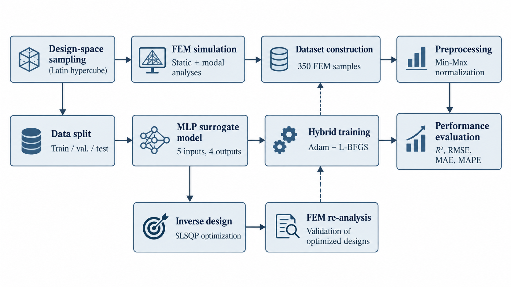
문제 정의부터 FEM 데이터 파이프라인, 모델링, 역설계, 재검증, 논문화까지 전체 연구 워크플로우를 구성.
Research Planning · FEM · AI · Writing →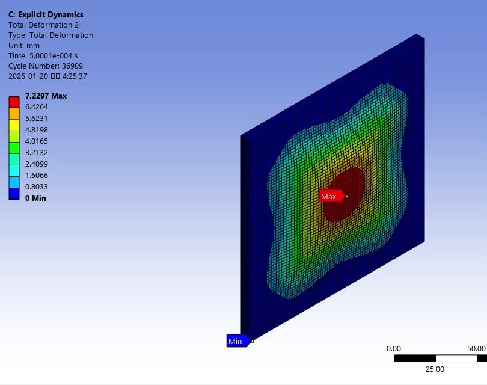
▶ 7.7 s simulation선행연구 조건을 재현하고 solver·material·mesh·time-step 문제를 디버깅해 검증 가능한 충돌해석 모델로 발전.
Literature Reproduction · CAE · Validation →FLAGSHIP 01 · RESEARCH CASE / FEM-AI
구조해석 데이터에서 역설계와 논문화까지 연결한 CAE-AI 연구
반복적인 FEM 해석 비용을 줄이기 위해 DCF의 형상·하중 조건과 구조 응답 간 관계를 학습하는 딥러닝 대리모델을 구축했습니다. 단순 모델 구현에 그치지 않고 문제 정의 → FEM 데이터셋 설계 → 모델 학습 → 성능 검증 → 역설계 → FEM 재검증 → 논문화로 이어지는 전체 연구 워크플로우를 직접 구성했습니다.
CAE-AI 선행연구 조사와 중앙 원형 홀 평판 파일럿을 통해 방법론을 검증한 뒤 DCF 문제로 확장했습니다.
힌지 형상 변수와 하중을 입력으로 정의하고 Static Structural / Modal Analysis 결과로 총 350개 FEM 데이터를 구축했습니다.
다중 구조응답을 동시에 예측하는 MLP를 구성하고 반복 평가를 통해 모델 안정성과 재현성을 확인했습니다.
SLSQP 최적화로 목표 변위를 만족하는 형상을 도출하고, 도출된 설계를 FEM으로 다시 해석해 검증했습니다.
연구 목적, 방법론, 정량 결과, 한계와 향후 과제까지 학술 논문의 논리 구조로 정리해 연구 결과를 문서화했습니다.
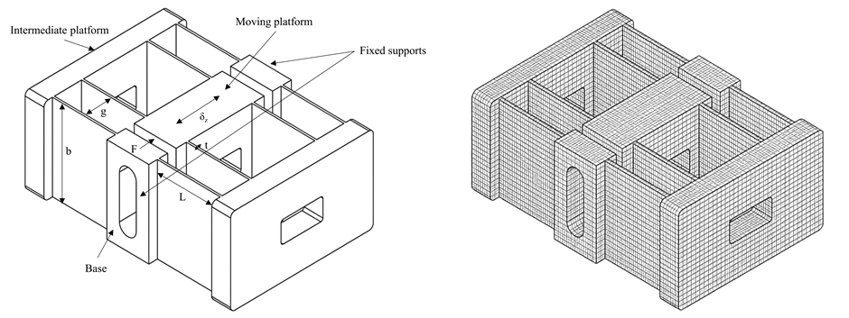
Geometry & FEM model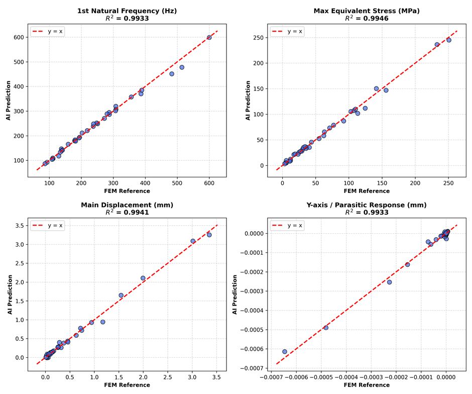
Prediction validation중앙 원형 홀 평판의 ¼ 대칭 FEM 모델과 ANN 구조응답 예측 문제를 재현하며 CAE-AI 파이프라인을 먼저 익힌 뒤, 실제 정밀 메커니즘 문제로 난도를 확장했습니다.
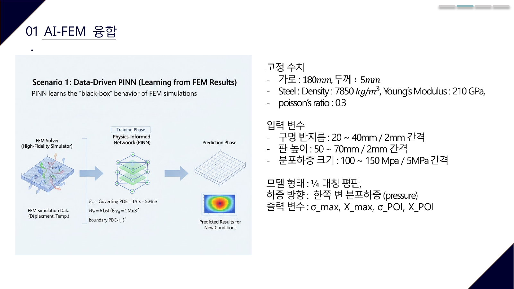
RISE, SAFE ONE-Q 등 연구과제 문서를 다뤄온 경험을 바탕으로 연구 배경–방법론–정량 검증–한계–향후 연구의 구조를 유지하며 논문화했습니다. 이 프로젝트의 핵심 산출물은 AI 코드 하나가 아니라 재현 가능한 연구 프로세스와 이를 설명할 수 있는 학술 문서입니다.
FLAGSHIP 02 · ENGINEERING CASE / EXPLICIT DYNAMICS
선행연구 재현에서 방탄 헬멧 적용까지 이어진 Explicit Dynamics 해석
정지 이미지로는 보이지 않는 변형 진행 과정을 실제 해석 영상으로 보여줍니다. 이 영상은 방탄 CAE 프로젝트의 대표 미디어로 사용하고, 아래에서는 논문 재현·수치 안정화·헬멧 적용 과정을 단계별로 설명합니다.
단순히 해석 결과를 얻는 것이 아니라, 선행연구를 기준으로 모델을 재현하고 결과 차이의 원인을 추적해 해석 조건을 보정했습니다.
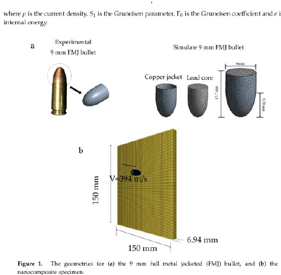
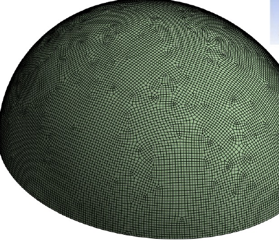
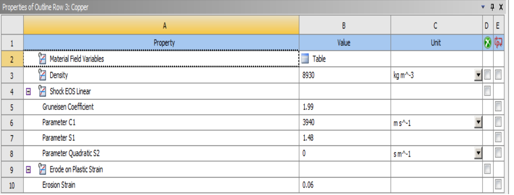
논문 값을 그대로 옮겼을 때 발생한 EOS 및 Johnson–Cook 관련 문제와 time step too small 오류를 재료모델·mesh·contact·erosion 조건으로 나눠 확인했습니다. LS-DYNA용 EOS_Mie-Gruneisen 설정을 ANSYS Explicit 환경의 Shock EOS Linear로 재구성하고, 지나치게 작은 요소와 불필요한 contact를 정리하면서 모델을 안정화했습니다.
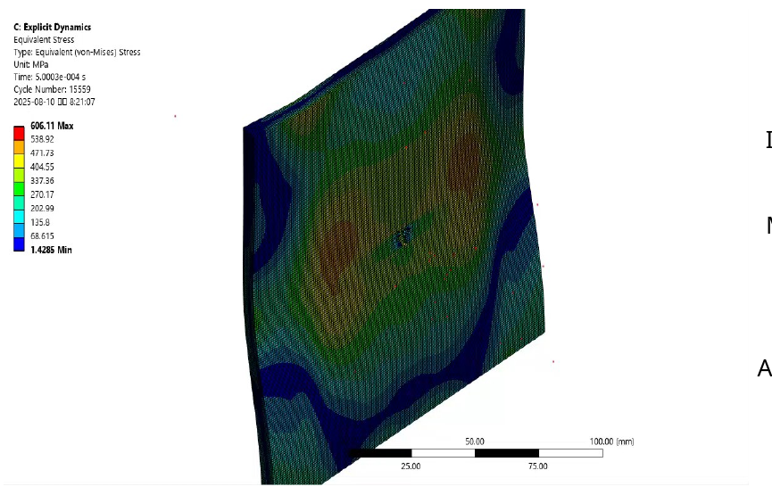
최종 plate impact 모델에서 변형 깊이를 문헌의 실험값과 numerical result에 비교하여 재현 수준을 확인했습니다. 결과가 다르면 다시 모델링 가정과 수치조건으로 돌아가 보정하는 방식으로 해석 신뢰성을 확보했습니다.
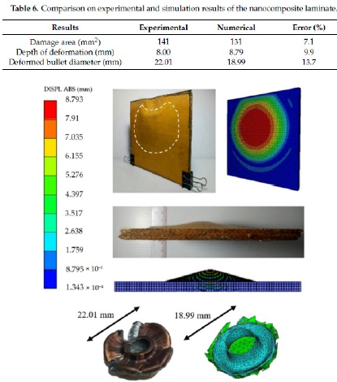
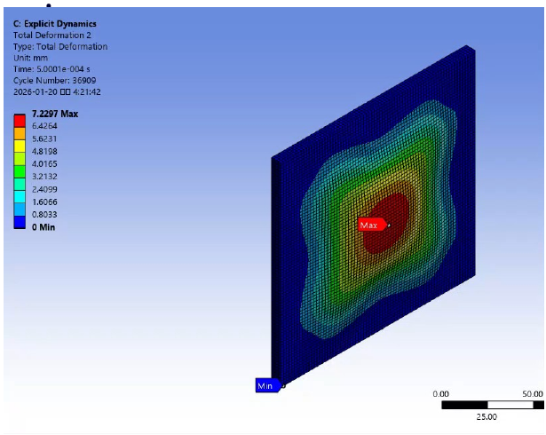
plate–projectile 재현 과정에서 정리한 충돌조건과 재료모델을 단순 헬멧 형상에 적용해 394 m/s 충돌 시 응력 분포와 구조 거동을 확인했습니다.
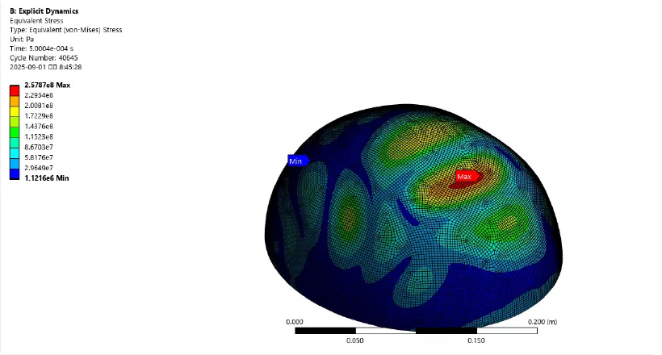
개인 해석에서 끝내지 않고 CAE 스터디를 주도하며 모델링·오류 해결 과정을 공유했고, 연구실 장비 관리 경험을 통해 해석 업무와 연구환경 운영을 함께 경험했습니다.
WHAT I LEARNEDCAE에서 중요한 것은 Solver를 실행하는 것이 아니라, 결과를 신뢰할 수 있도록 모델링 가정과 수치조건을 설명할 수 있는 것입니다.
RESEARCH & ENGINEERING EXPERIENCE
연구자 등록과 학부연구생 활동을 통해 연구과제·학술성과 중심의 연구환경을 경험했습니다.
연구과제 관련 자료를 다루며 기술 내용을 연구 목적, 수행내용, 성과 중심으로 구조화하는 문서 경험을 쌓았습니다.
다수의 엔지니어링 활동에서 역할 조율과 실행을 맡으며 팀 단위 프로젝트를 이끌었습니다.
CAE 스터디 운영과 장비 관리 경험을 통해 개인 과제뿐 아니라 연구환경 유지·공유에도 참여했습니다.
OTHER ENGINEERING WORKS
시각적 비중을 낮추되, 실제 시스템 구현 역량은 확인할 수 있도록 정리했습니다.
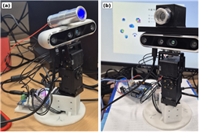
ArUco 연동 검증에서 출발해 HSV 기반 녹색 풍선 추적, P 제어·EMA·deadband 튜닝 및 23회 run 단위 성능평가까지 확장한 시스템.
Journal paper · Accepted 2026.09.16View case →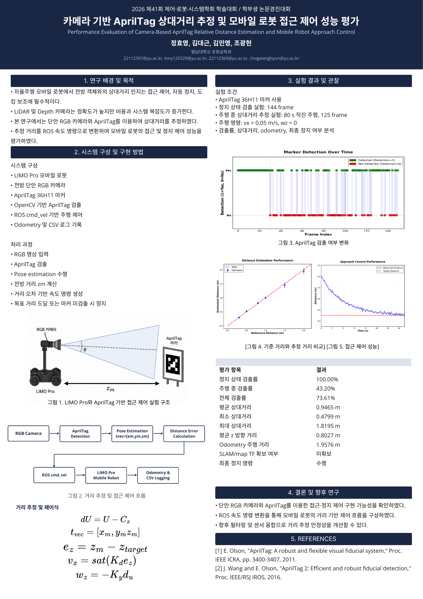
단안 RGB 카메라 기반 거리 추정과 접근·정지 제어를 평가하고 학회에서 발표.
View case →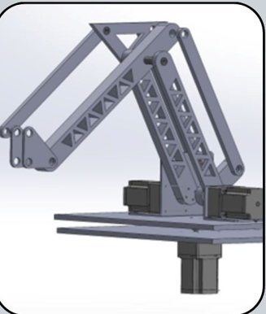
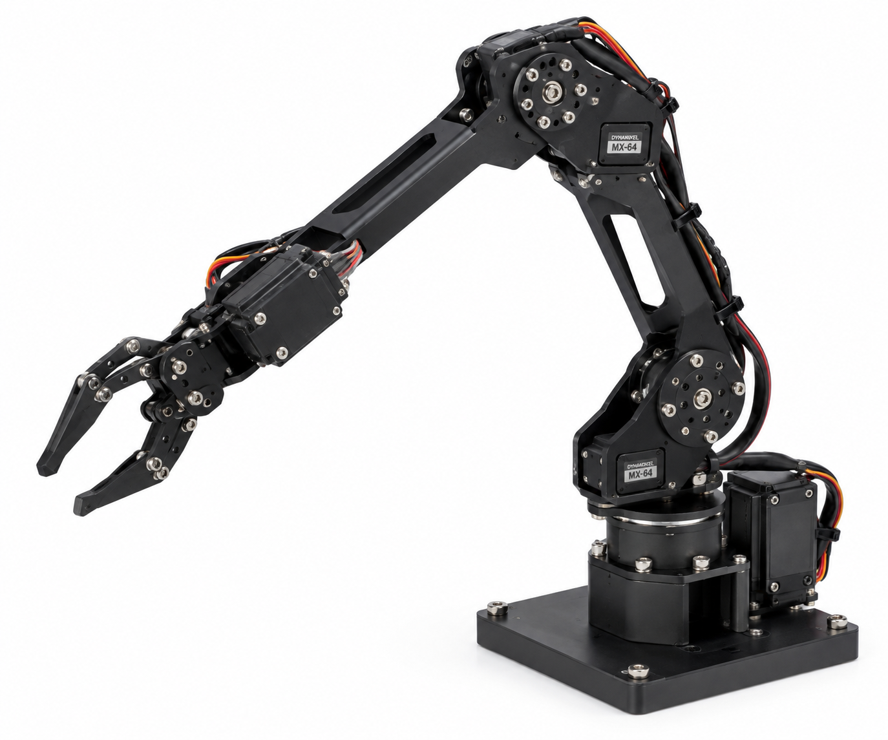
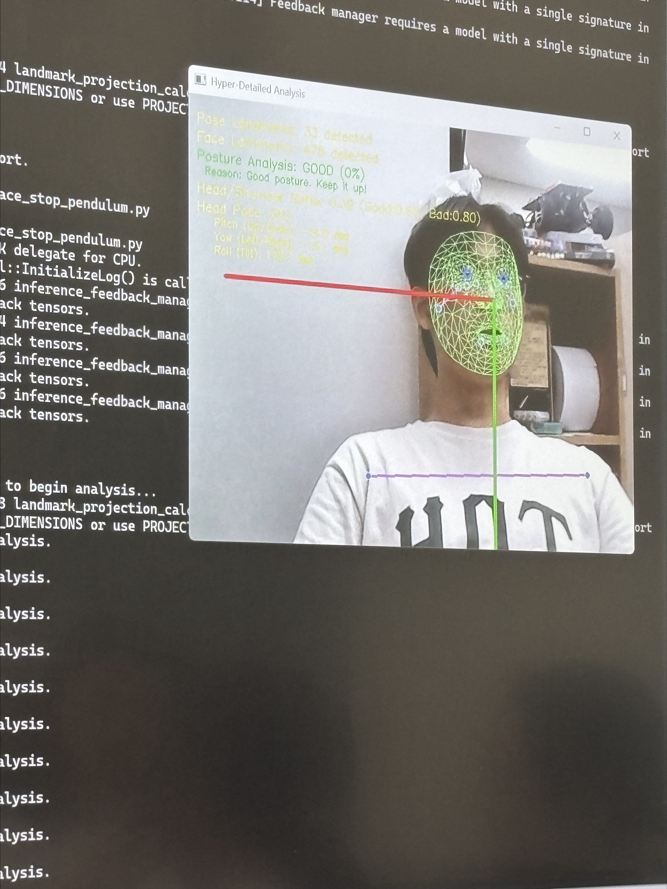
로봇팔 기구 설계, 실제 제어 실험, 얼굴 추적을 단계적으로 검증하고 자세 교정 아이디어를 특허 출원으로 확장.
Patent Application · 10-2025-0134168View case →RESEARCH OUTPUTS
연구 배경, 방법론, 정량 검증, 역설계, 한계와 향후 연구까지 학술 논문 구조로 정리한 대표 연구 산출물.
Research planning · FEM dataset · MLP surrogate · inverse design · FEM validation정효영 · 김민영 · 조광현 · 성기정 · 이동연* · Journal of the Korea Academia-Industrial Cooperation Society. D455 기반 실제 시스템 구현과 제어조건 변화에 따른 반복 실험을 run 단위로 정량 평가했습니다.
23 eligible runs · Baseline 90.70 px → Tuned-A 15.46 px mean center error · publication date pending2026 제41회 제어·로봇·시스템학회 학부생 논문경진대회 포스터 발표.
Poster PDF →TOOLS / TECH STACK
도구 자체보다, 위 프로젝트에서 어떤 문제를 해결하는 데 사용했는지를 중심으로 구성했습니다.
ENGINEERING APPROACH
무엇이 실제 성능 병목인지 수치와 현상으로 분리
설계 변수·경계조건·센서/제어 구조를 명확히 정의
실험, FEM, 데이터 기반 모델을 교차 검증
오차 원인을 기준으로 형상·파라미터·모델을 반복 개선
CONTACT
Robotics · CAE · FEM-AI 관련 연구 및 엔지니어링 기회에 열려 있습니다.